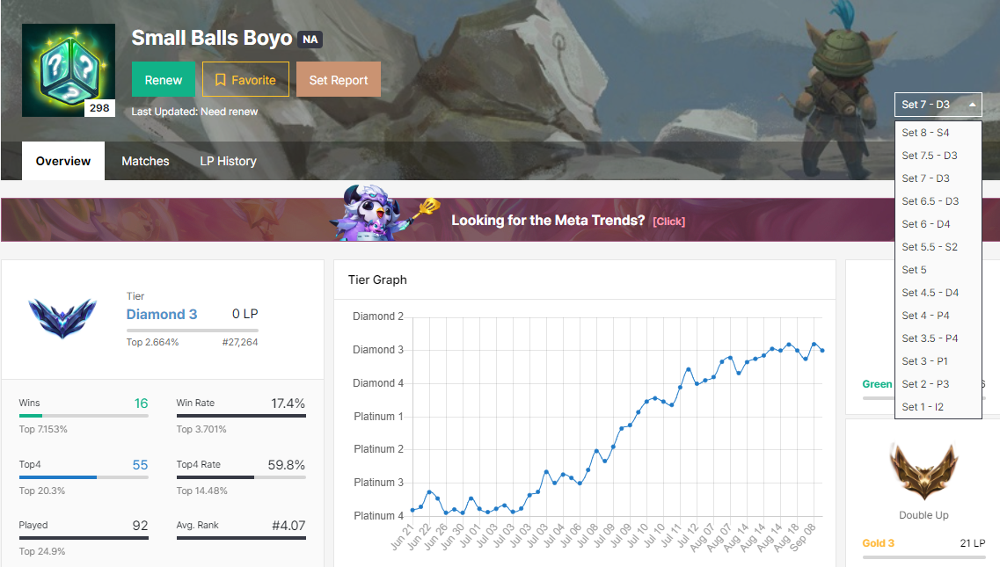

TFT is the best video game ever created. I also happen to be very good at it,
during last two ranked seasons I had peaked Diamond 1.

Most people really think the game is boring, which it is, but it is still the best.
Usually in almost all my games I am the greatest of all time, but the other 90% of the time I am dog water
I spend lots of my free time playing games, which would make sense as to why I would play many games.

My second favorite game of all time would be Terraria. This game is a sandbox game that also has progression and bosses. The picture show here is proof I beat
all bosses and soft-hundred-percented the game in it's hardest mode.
No I haven't activated windows.
Jason is what we call the peak male. Any person would pursue or rather GAME him.
Many people wouldn't understand why he is the ideal man, me too am confused. But one thing everyone can agree on is that he is not a man,
but rather a god in human form.